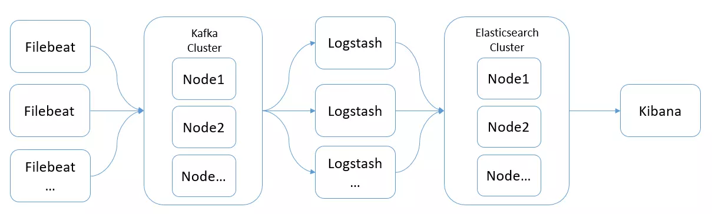
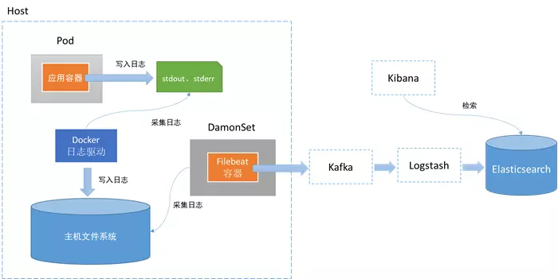
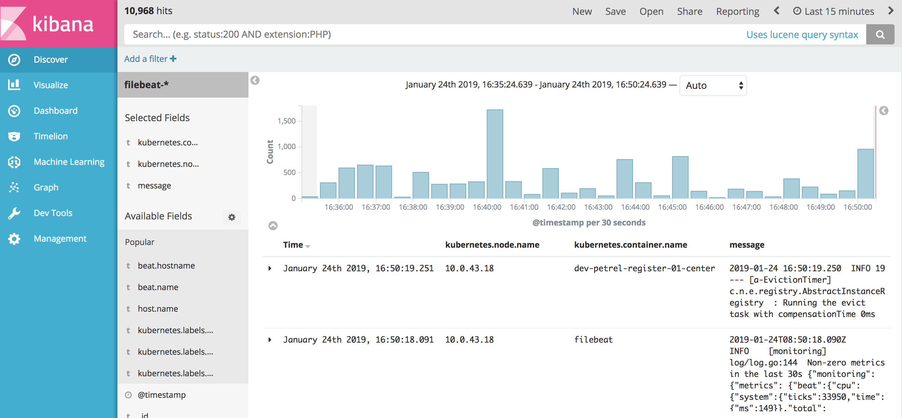

日志归集(ELK)
1. 最佳架构


2. 开源项目
elastic/beats/deploy/kubernetes/filebeat
3. 镜像仓库
4. kibana index 设置
使用：
filebeat-*
@timestamp
最终效果图：

5. 进展
目前 elk 已经在 k8s 内实现，与 kafka、logstash 的集成待后续进一步研究。在生产环境可以与现有的 efk 系统进行对接。
6. 参考资料
玩儿透围绕ELK体系大型日志分析集群方案设计.搭建.调优.管理
ELK+Filebeat+Kafka+ZooKeeper 构建海量日志分析平台
ELK+Filebeat+Kafka+ZooKeeper 构建海量日志分析平台